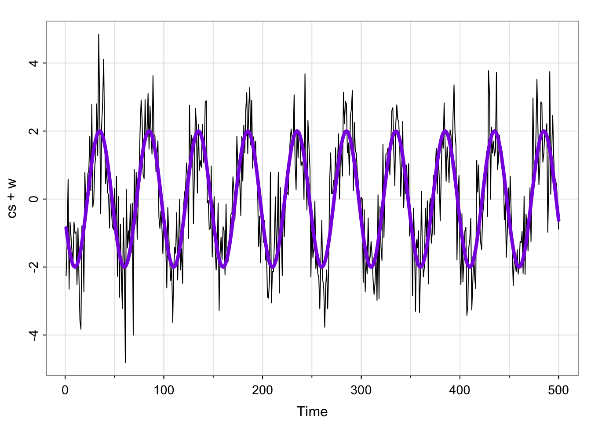
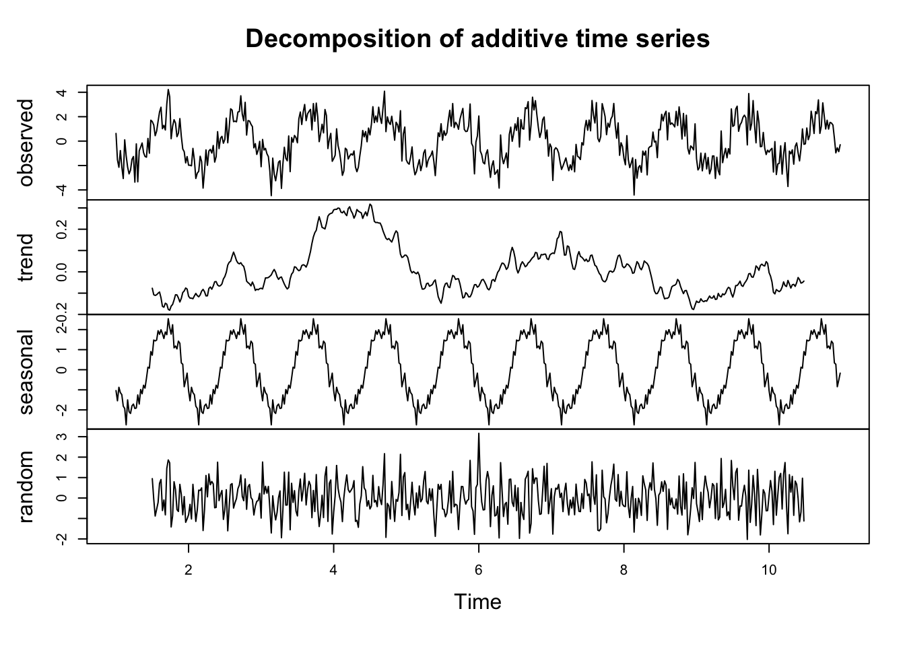

Code
library(astsa)
## use the decompose function on the jj series
jj_decomp <- ## your code here
## plot the decomposition
## your code here\[ \newcommand\E{{\mathbb{E}}} \]
Decomposing a time series
Stationarity
Autocorrelation function
Time series regression
Similar to the signal plus noise model,
\[ X_t = T_t + S_t + W_t \]
The r function stats::decompose will split a time series \(X_t\) into these three components.
library(astsa)
## use the decompose function on the jj series
jj_decomp <- ## your code here
## plot the decomposition
## your code hereUse the decompose function on the jj series.
Match the terms in the equation on the previous slide to each of the components in the chart
Describe the trend.
Does the bottom plot (“error”) look like white noise?
Look at the documentation for the decompose function. Can you determine how the “trend” component was computed?
Use Lecture3Template.qmd
Recall the (sinusoidal) signal plus noise model: \[ w_t \sim \text{iid } N(0, \sigma^2_w)\\ x_t = 2\cos\left (\frac{2\pi t}{50} - .6\right) + w_t \]
decompose function. Does the error portion look like white noise?Hint: The below code gives an error. Compare the “frequency” of the jj series. Can you figure out how to use the ts function to specify the correct frequency?
cs = 2*cos(2*pi*(1:500)/50 + .6*pi)
w = rnorm(500,0,1)
x_t = cs + w
plot(decompose(x_t))Use Lecture3Template.qmd
\[ w_t \sim N(0, \sigma^2_w), t = 1, \dots, n\\ x_t = 2\cos\left (\frac{2\pi t}{50} - .6\right) + w_t \]
cs = 2*cos(2*pi*(1:500)/50 + .6*pi)
w = rnorm(500,0,1)
tsplot(cs + w)
lines(cs, col = "blueviolet", type = "l", lwd = 4)
cs = 2*cos(2*pi*(1:500)/50 + .6*pi)
w = rnorm(500,0,1)
x_t = ts(cs + w, frequency = 50)
plot(decompose(x_t))
Does this function give us an estimate of the form of the mean function?
library(ggplot2)
t <- seq(1, 16, 1)
x_t <- 0.5*t
#x <- x - mean(x)
#y <- y - mean(y)
df <- data.frame(t, x_t)
# For every row in `df`, compute a rotated normal density centered at `y` and shifted by `x`
curves <- lapply(seq_len(NROW(df)), function(i) {
mu <- df$x_t[i]
range <- mu + c(-1.5, 1.5)
seq <- seq(range[1], range[2], length.out = 100)
data.frame(
t = -1 * dnorm(seq, mean = mu, sd = 0.5) + df$t[i],
x_t = seq,
grp = i
)
})
# Combine above densities in one data.frame
curves <- do.call(rbind, curves)
new.x = seq(from = 1, to = 16, by = .1)
new.y = .5*new.x
trend_line <- data.frame(x = new.x,
y = new.y)
ggplot(df, aes(t, x_t)) +
geom_point(col = "blueviolet", pch = 17) +
#geom_line() +
# The path draws the curve
geom_path(data = curves, aes(group = grp)) +
geom_line(data = trend_line, aes(x=x,y=y), col = "blueviolet") +
lims(y = c(-2,10)) +
scale_x_continuous(breaks = seq(1, 16, by = 1)) +
theme_minimal() +
theme( # remove the vertical grid lines
panel.grid = element_blank() ,
# explicitly set the horizontal lines (or they will disappear too)
panel.grid.major.x = element_line( size=.1, color="black" )) +
geom_rect(aes(xmin = 3.1, xmax = 4.1, ymin = 0, ymax = 4), fill = NA, col = "blue")+
geom_rect(aes(xmin = 7.1, xmax = 8.1, ymin = 2, ymax = 6), fill = NA, col = "magenta")Warning: The `size` argument of `element_line()` is deprecated as of ggplot2 3.4.0.
ℹ Please use the `linewidth` argument instead.
# The polygon does the shading. We can use `oob_squish()` to set a range.
#geom_polygon(data = curves, aes(y = scales::oob_squish(y, c(0, Inf)),group = grp))# install.packages("ggplot2")
# install.packages("ggExtra")
library(ggplot2)
library(ggExtra)
set.seed(50)
x1 <- rnorm(100,x_t[4], .5)
x2 <- rnorm(100,x_t[8], .5)
x <- data.frame(x1, x2)
# Save the scatter plot in a variable
p <- ggplot(x, aes(x = x1, y = x2)) +
geom_point() + xlim(0,6) + ylim(0,6)+
geom_text(aes(x = 4, y = 2, label = "gamma(2,8) = \n cov(x_2, x_8) = 0"), size = 6) + coord_fixed()
# Arguments for each marginal histogram
ggMarginal(p, type = "density", adjust = 2,
xparams = list(col = "blue", fill = "blue"),
yparams = list(col = "magenta", fill = "magenta"))Warning in geom_text(aes(x = 4, y = 2, label = "gamma(2,8) = \n cov(x_2, x_8) = 0"), : All aesthetics have length 1, but the data has 100 rows.
ℹ Please consider using `annotate()` or provide this layer with data containing
a single row.
All aesthetics have length 1, but the data has 100 rows.
ℹ Please consider using `annotate()` or provide this layer with data containing
a single row.
#install.packages("MASS")
library(MASS)
set.seed(100)
mu <- c(x_t[4], x_t[8])
varcov <- matrix(c(.5, .3, .3, .5),
ncol = 2)
x<- mvrnorm(100, mu = mu, Sigma =varcov)
x <- data.frame(x1 = x[,1], x2 = x[,2])
# Save the scatter plot in a variable
p <- ggplot(x, aes(x = x1, y = x2)) +
geom_point() + xlim(0,6) + ylim(0,6) +
geom_text(aes(x = 4, y = 2, label = "gamma(2,8) = \n cov(x_2, x_8) = 0.2"), size = 6) + coord_fixed()
# Arguments for each marginal histogram
ggMarginal(p, type = "density", adjust = 2,
xparams = list(col = "blue", fill = "blue"),
yparams = list(col = "magenta", fill = "magenta"))Warning in geom_text(aes(x = 4, y = 2, label = "gamma(2,8) = \n cov(x_2, x_8) = 0.2"), : All aesthetics have length 1, but the data has 100 rows.
ℹ Please consider using `annotate()` or provide this layer with data containing
a single row.
All aesthetics have length 1, but the data has 100 rows.
ℹ Please consider using `annotate()` or provide this layer with data containing
a single row.
A time series is stationary if
And nonstationary otherwise.
\[ x_t = x_{t-1} + w_t \]
Last, time, we saw that the mean function is \(\E(x_t) = 0\), and the autocovariance function is \(\gamma_x(s, t) = \min\{s,t\}\sigma^2_w\)
Use Lecture3Template.qmd
sigma_w <- 5 #define variance of the white noise
coords <- expand.grid(1:20, 1:20)
names(coords) <- c("s", "t") ## the coordinates represent different possible time points
coords$gamma <- pmin(coords$s, coords$t)*sigma_w
library(plotly)
Attaching package: 'plotly'The following object is masked from 'package:MASS':
selectThe following object is masked from 'package:ggplot2':
last_plotThe following object is masked from 'package:stats':
filterThe following object is masked from 'package:graphics':
layoutplot_ly(coords,
x= ~s, y=~t, z=~gamma,
type = 'scatter3d', mode = "markers", size = .1)# plot the autocov's we computed last time, show on model of time series## white noise
sigma_w <- 5 #define variance of the white noise
coords <- expand.grid(1:20, 1:20)
names(coords) <- c("s", "t") ## the coordinates represent different possible time points
coords$gamma <- 0
coords$gamma[coords[,1] == coords[,2]] <- sigma_w ## covariance is sigma_w if s = t, 0 otherwise
library(plotly)
plot_ly(coords,
x= ~s, y=~t, z=~gamma,
type = 'scatter3d', mode = "markers", size = .1)Which of the following time series are stationary?

Use Lecture3Template.qmd
The autocorrelation function (acf) of a time series is: \[ \rho(s, t) = \frac{\gamma(s,t)}{\sqrt{\gamma(s,s)\gamma(t,t)}} \] i.e. the autocovariance divided by the standard deviation of the process at each time point.
Since for stationary time series the autocovariance depends on \(s\) and \(t\) only through their difference, we can write the covariance as: \[ \gamma(s,t) = \gamma(h) = cov(x_{t+h}, x_t) = \E[(x_{t+h} - \mu)(x_t-\mu)] \] and the correlation as: \[ \rho(s,t) = \rho(h) = \frac{\gamma(h)}{\gamma(0)} \] \(h = s-t\) is called the lag.
\(\gamma_v(s, t) = cov(v_s, v_t) = \begin{cases}\frac{3}{9}\sigma^2_w & \text{ if } s = t\\ \frac{2}{9}\sigma^2_w & \text{ if } \vert s-t \vert = 1 \\\frac{1}{9}\sigma^2_w & \text{ if } \vert s-t \vert =2 \\0 & \text{ if } \vert s - t\vert > 2\end{cases}\)
Since \(v\) is stationary, we can write
\(\gamma_v(h) = \begin{cases}\frac{3}{9}\sigma^2_w & \text{ if } h = 0\\ \frac{2}{9}\sigma^2_w & \text{ if } h = \pm1 \\\frac{1}{9}\sigma^2_w & \text{ if }h = \pm 2 \\0 & \text{ if } h> 2\end{cases}\)
And the autocorrelation is:
\(\rho(h) = \begin{cases}1 & \text{ if } h = 0\\ \frac{2}{3} & \text{ if } h = \pm1 \\\frac{1}{3}_w & \text{ if }h = \pm 2 \\0 & \text{ if } h> 2\end{cases}\)
In R, we can plot \(\rho(h)\)
ACF = c(0,0,0,1,2,3,2,1,0,0,0)/3
LAG = -5:5
tsplot(LAG, ACF, type="h", lwd=3, xlab="LAG")
abline(h=0)
points(LAG[-(4:8)], ACF[-(4:8)], pch=20)
axis(1, at=seq(-5, 5, by=2)) 
# simulate from an ar(1)
# use acf() function to plot acf
# save output of acf and inspectUse Lecture3Template.qmd
When smoothing time series data, it is sometimes advantageous to give decreasing amounts of weights to values farther away from the center. Consider the simple two-sided moving average smoother of the form: \[ v_t = \frac{1}{4}(w_{t-1} + w_t + w_{t+1}) \] Where \(w_t\) are white noise. The autocovariance as a function of \(h\) is: \[\gamma_v(s, t) = cov(v_s, v_t) = \begin{cases}\frac{6}{16}\sigma^2_w & \text{ if } h = 0\\ \frac{4}{16}\sigma^2_w & \text{ if } h = \pm 1 \\\frac{1}{16}\sigma^2_w & \text{ if } h = \pm 2 \\0 & \text{ if } h> 2\end{cases}\] 1. Compare to the autocovariance equation for the unweighted 3 point moving average from Lecture 2. Comment on the differences.
Use Lecture3Template.qmd ## Activity 7 Recall the decomposition of the Johnson and Johnson quarterly earnings.
plot(decompose(jj)) ## plot decomposition
Use Lecture3Template.qmd